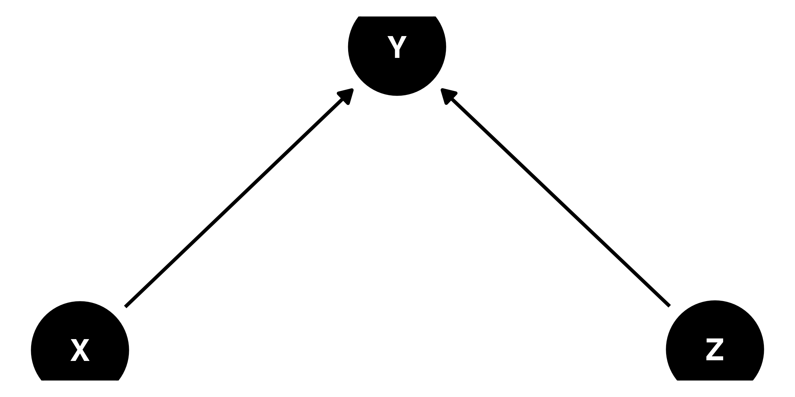

pacman::p_load(tidyverse, ggdag, dagitty)回帰分析
1 セットアップ
2 欠落変数バイアス
応答変数 Y の規定要因として D と X があり、また、 D は X に規定される以下のモデルを考えてみよう（\(e\)と\(u\)は平均0の正規分布に従う誤差項）。 図 1 は3つの変数間の関係を有向非巡回グラフ（directed acyclic graph; DAG）で示したものである。
\[ \begin{eqnarray} Y_i & = & 3 + 1 D_i - 3 X_i + e_i \\ D_i & = & 1 + 2 X_i + u_i \end{eqnarray} \]

まず、確率変数 X 、 D 、 Y を作成し、真のモデルを推定してみよう。
set.seed(19861008)
X <- rnorm(1000, 10, 2)
D <- 1 + 2 * X + rnorm(1000, 0, 1)
Y <- 3 + 1 * D - 3 * X + rnorm(1000, 0, 1)
lm(Y ~ D + X)
Call:
lm(formula = Y ~ D + X)
Coefficients:
(Intercept) D X
3.0443 0.9897 -2.9831 D の傾き係数のパラメーター（真の値）は0.990である。もし、交絡要因である X をモデルから除外したら、 D の傾き係数の推定値はどうなるだろうか。
lm(Y ~ D)
Call:
lm(formula = Y ~ D)
Coefficients:
(Intercept) D
2.7467 -0.4179 点推定値は-0.418であり、交絡要因が含まれていないモデルから推定された推定値だから、これはバイアス付きの推定値である。真の値との差は-1.408（= -0.418 - 0.990）であり、これが欠落変数バイアスの大きさである。このバイアスの大きさは X を D に回帰させた場合の D の傾き係数と真のモデルにおける Xの傾き係数の積と一致する（講義スライド参照）。まず、 X を D に回帰した場合の D の傾き係数を推定してみよう。
lm(X ~ D)
Call:
lm(formula = X ~ D)
Coefficients:
(Intercept) D
0.09977 0.47185 X の傾き係数の点推定値は0.472である。この値と正しいモデル（ Y を D と X に回帰させたモデル）の X の傾き係数（= -2.983）の積を計算してみよう。
# 正確には coef(lm(Y ~ D + X))[3] * coef(lm(X ~ D))[2] で計算
0.472 * -2.9831[1] -1.408023結果は-1.408であり、欠落変数バイアスの大きさである。
3 処置後変数バイアス
応答変数 Y の規定要因として D と X があり、また、 X は D に規定される以下のモデルを考えてみよう（\(e\)と\(u\)は平均0の正規分布に従う誤差項）。 図 2 は3つの変数間の関係をDAGで示したものである。
\[ \begin{eqnarray} Y_i & = & 1 + 2 D_i - 4 X_i + e_i \\ X_i & = & 2 + 0.25 D_i + u_i \end{eqnarray} \]

D が1増加すると Y はいくら増減するだろうか。答えは3である。まず、 図 2 の下の矢印に従い、 D が1増加すると Y は2増加し、これが直接効果（direct effect）である。しかし、 D が1上がると X も0.25増加し、 X が1増加すると Y は4増加する。つまり、 D が1増加すると X を経由して Y が1単位増加（= 0.25 \(\times\) 4）ことになる。これが間接効果（indirect effect）である。結果として D が1増加すると Y は3単位分（= 直接効果 + 間接効果）増加する。因果推論において処置変数の効果量は一般的に直接効果と間接効果の和である総効果（total effect）が重視される。因果メカニズムに興味があれば、直接効果と間接効果は分解する必要があるが、我々が興味のあるものは「結局、これをやったら投票率・GDP・成績・血圧はどう変わるか」である。これら3つの変数が手元にある場合、どのようなモデルを推定すべきか。
まず、架空のデータを作成し、 Y を D と X に回帰させたモデルを推定してみよう。
set.seed(19861008)
D <- rnorm(1000, 10, 2)
X <- 2 + 0.25 * D + rnorm(1000, 0, 1)
Y <- 1 + 2 * D + 4 * X + rnorm(1000, 0, 1)
lm(Y ~ D + X)
Call:
lm(formula = Y ~ D + X)
Coefficients:
(Intercept) D X
1.055 1.999 3.990 D の傾き係数は約1.999であり、これは D \(\rightarrow\) Y の直接効果である。また、 X \(\rightarrow\) Y の効果も推定されており、これは約3.990である。しかし、これだけでは総効果は分からない。総効果を推定するためには処置後変数である X をモデルから除外すべきである。
lm(Y ~ D)
Call:
lm(formula = Y ~ D)
Coefficients:
(Intercept) D
9.106 2.980 総効果とは約2.980であり、先ほどのモデルにおける D の係数とは約0.981の差があり、これは処置後変数バイアスの大きさである。
処置後変数バイアスの大きさは X を D に回帰させた場合の D の係数と最初のモデルにおける X \(\rightarrow\) Y の係数の積からも計算できる。
lm(X ~ D)
Call:
lm(formula = X ~ D)
Coefficients:
(Intercept) D
2.0181 0.2458 処置後変数バイアスの大きさは X を D に回帰させた場合の D の係数は約0.246である。最初のモデルから得られた推定値を利用し、処置後変数バイアスの大きさを計算してみよう。
# 正確には coef(lm(X ~ D))[2] * coef(lm(Y ~ D + X))[3]
0.246 * 3.990[1] 0.981544 DAGと共変量選択
4.1 DAGの作り方
my_dag_1 <- dagify(
Y ~ X,
Y ~ Z,
exposure = "X",
outcome = "Y"
)
ggdag(my_dag_1) + theme_dag()
my_dag_2 <- dagify(
Y ~ X,
Y ~ Z,
exposure = "X",
outcome = "Y",
coords = list(x = c("X" = 1, "Z" = 1, "Y" = 2),
y = c("X" = 1, "Z" = 2, "Y" = 1.5))
)
ggdag(my_dag_2) + theme_dag()
my_dag_3 <- dagify(
Y ~ X + Z,
X ~ Z,
exposure = "X",
outcome = "Y",
coords = list(x = c("X" = 1, "Z" = 1.5, "Y" = 2),
y = c("X" = 1, "Z" = 2, "Y" = 1))
)
ggdag(my_dag_3) + theme_dag()
my_dag_4 <- dagify(
Y ~ D + X1 + X2,
X1 ~ Z1 + Z2,
D ~ Z1 + Z3,
X2 ~ Z2 + Z3,
Z1 ~ W,
Z2 ~ W,
Z3 ~ W,
exposure = "D",
outcome = "Y",
coords = list(x = c("Y" = 2,
"X1" = 1, "D" = 2, "X2" = 3,
"Z1" = 1, "Z2" = 2, "Z3" = 3,
"W" = 2),
y = c("Y" = 4,
"X1" = 3, "D" = 3, "X2" = 3,
"Z1" = 2, "Z2" = 2, "Z3" = 2,
"W" = 1))
)
ggdag(my_dag_4) + theme_dag()
4.2 共変量選択
my_dag_4 |>
adjustmentSets(){ X1, X2 }
{ X1, Z2, Z3 }
{ X2, Z1, Z2 }
{ Z1, Z3 }my_dag_4 |>
ggdag_adjustment_set(shadow = TRUE) +
theme_dag()